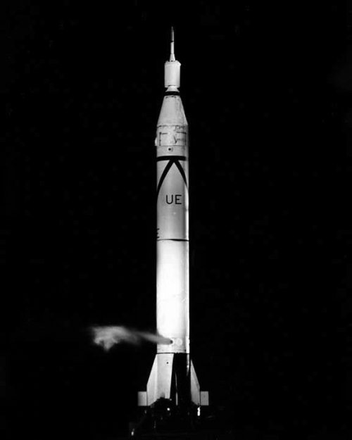
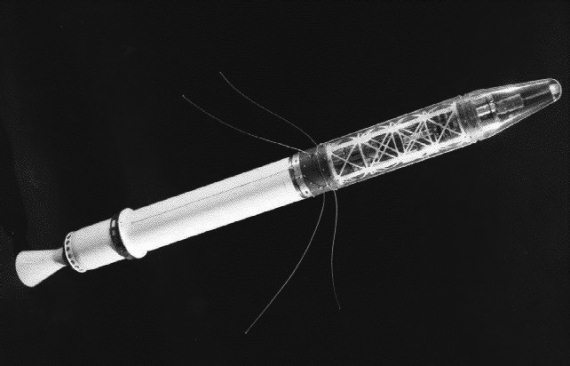

На орбите «Эксплорер-1»
Справедливости ради надо сказать, что, потерпев неудачу с запуском «Авангарда», американцы не были намерены сдаваться. Теперь уже было не до национальной гордости, и все надежды возлагались на бывшего «врага Америки», ставшего к тому времени гражданином США, Вернера фон Брауна и его команду. Он получил полную свободу действий, и на него делалась теперь основная ставка. Указание министра обороны Нейла МакЭлроя о подготовке предложений по запуску спутника с помощью баллистической ракеты «Юпитер-С» фон Браун получил 8 ноября 1957 года, и спустя три дня уже представил проект на рассмотрение военного ведомства.
Предложенная схема запуска несколько отличалась от той, которую немец представлял своим коллегам несколькими годами раньше. Вся ракета-носитель в новом варианте должна была состоять из четырех ступеней, только первая из которых («Редстоун») должна была быть жидкостной. Вторая ступень состояла из связки одиннадцати твердотопливных ракет «Сержант», третья – из трех таких ракет, четвертая – из одного «Сержанта» с неотделяемой полезной нагрузкой. Это и был тот самый американский спутник, который окрестили «Эксплорер-1». Общий вес ракеты-носителя составлял 29 тонн, общая длина 23 метра, диаметр – 1,8 метра. Спутник весил 13,97 килограмма.
В комплект научной аппаратуры, которую установили на спутнике, входил счетчик Гейгера – Мюллера для исследования космических лучей, особая сетка и микрофон для регистрации микрометеоритов, а также датчики температуры. Данные с приборов должны были поступать непрерывно через четыре гибкие штыревые антенны. Питание аппаратуры осуществлялось ртутными батареями.

Ракета-носитель «Юпитер» на старте
Запустить спутник через 60 дней после русских, как обещал, фон Браун не смог. И все-таки ему потребовалось не так уж много времени, чтобы восстановить паритет.
Первый американский спутник был запущен 1 февраля 1958 года с космодрома на мысе Канаверал, через 119 дней. Его «забросили» на орбиту с высотой перигея 347 километров и высотой апогея 1859 километров.
В ходе полета «Эксплорера-1» был проведен эксперимент, разработанный в Лаборатории реактивного движения под руководством доктора Джеймса Ван Аллена и подтвердивший гипотезу о существовании радиационных поясов Земли.

«Эксплорер-1»
Полет спутника «Эксплорер-1» продолжался до 31 марта 1970 года. В тот день аппарат сошел с орбиты и сгорел в плотных слоях земной атмосферы. Продолжительность его полета составила более 12 лет.
А вот «несчастливый» «Авангард-1» кружит над Землей до сих пор. И будет продолжать накручивать витки еще тысячи лет, если его не уничтожит какой-нибудь шальной метеорит. Но это так, к слову.